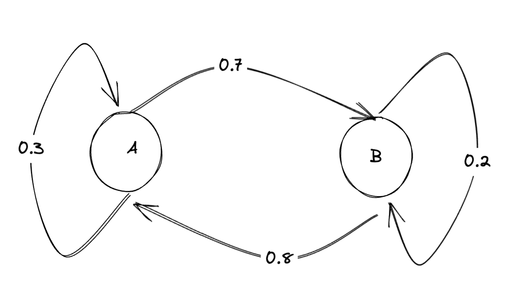

<!DOCTYPE html>
<html lang="en">
  <head>
    <meta charset="utf-8" />
    <meta name="viewport" content="width=device-width, initial-scale=1.0, maximum-scale=1.0, user-scalable=no" />

    <title></title>
    <link rel="stylesheet" href="dist/reveal.css" />
    <link rel="stylesheet" href="dist/theme/simple.css" id="theme" />
    <link rel="stylesheet" href="plugin/highlight/zenburn.css" />
	<link rel="stylesheet" href="css/layout.css" />
	<link rel="stylesheet" href="plugin/customcontrols/style.css">


    <script defer src="dist/fontawesome/all.min.js"></script>

	<script type="text/javascript">
		var forgetPop = true;
		function onPopState(event) {
			if(forgetPop){
				forgetPop = false;
			} else {
				parent.postMessage(event.target.location.href, "app://obsidian.md");
			}
        }
		window.onpopstate = onPopState;
		window.onmessage = event => {
			if(event.data == "reload"){
				window.document.location.reload();
			}
			forgetPop = true;
		}

		function fitElements(){
			const itemsToFit = document.getElementsByClassName('fitText');
			for (const item in itemsToFit) {
				if (Object.hasOwnProperty.call(itemsToFit, item)) {
					var element = itemsToFit[item];
					fitElement(element,1, 1000);
					element.classList.remove('fitText');
				}
			}
		}

		function fitElement(element, start, end){

			let size = (end + start) / 2;
			element.style.fontSize = `${size}px`;

			if(Math.abs(start - end) < 1){
				while(element.scrollHeight > element.offsetHeight){
					size--;
					element.style.fontSize = `${size}px`;
				}
				return;
			}

			if(element.scrollHeight > element.offsetHeight){
				fitElement(element, start, size);
			} else {
				fitElement(element, size, end);
			}		
		}


		document.onreadystatechange = () => {
			fitElements();
			if (document.readyState === 'complete') {
				if (window.location.href.indexOf("?export") != -1){
					parent.postMessage(event.target.location.href, "app://obsidian.md");
				}
				if (window.location.href.indexOf("print-pdf") != -1){
					let stateCheck = setInterval(() => {
						clearInterval(stateCheck);
						window.print();
					}, 250);
				}
			}
	};


        </script>
  </head>
  <body>
    <div class="reveal">
      <div class="slides"><section  data-markdown><script type="text/template">
<div class="" style="position: absolute; left: 0px; top: 0px; height: 700px; width: 960px; min-height: 700px; display: flex; flex-direction: column; align-items: center; justify-content: center" absolute="true">

# HIST4805a
</div></script></section><section  data-markdown><script type="text/template"><!-- .slide: class="drop" -->
<div class="" style="position: absolute; left: 0px; top: 0px; height: 700px; width: 960px; min-height: 700px; display: flex; flex-direction: column; align-items: center; justify-content: center" absolute="true">

## Overall Plan for HIST4805

- &shy;<!-- .element: class="fragment" data-fragment-index="1" -->this course is an EXPERIMENT. Who knows where it'll lead?
- &shy;<!-- .element: class="fragment" data-fragment-index="2" -->who I am and why I'm interested in doing this experiment
- &shy;<!-- .element: class="fragment" data-fragment-index="3" -->who are all of you?
</div></script></section><section  data-markdown><script type="text/template"><!-- .slide: class="drop" -->
<div class="" style="position: absolute; left: 0px; top: 0px; height: 700px; width: 960px; min-height: 700px; display: flex; flex-direction: column; align-items: center; justify-content: center" absolute="true">

## PLAN, cont.,

- contextualize the emergence of large language models in terms of the historical and philosophical antecedents
- develop a critical perspective on the utility of these models
- situate their use in terms of the broader ethics of doing good history
- self-reflexive critical engagement with these technologies
</div></script></section><section  data-markdown><script type="text/template"><!-- .slide: class="drop" -->
<div class="" style="position: absolute; left: 0px; top: 0px; height: 700px; width: 960px; min-height: 700px; display: flex; flex-direction: column; align-items: center; justify-content: center" absolute="true">

## The Imagined Flow in any given class:

- freewriting in your labnotebook re readings, previous classes
- discussion leaders
- break
- me waffling on
- hands on stuff maybe
</div></script></section><section  data-markdown><script type="text/template"><!-- .slide: class="drop" -->
<div class="" style="position: absolute; left: 0px; top: 0px; height: 700px; width: 960px; min-height: 700px; display: flex; flex-direction: column; align-items: center; justify-content: center" absolute="true">

## TODAY'S TOPICS

- so, gpt eh? Used it?
- markov chains & a [small language model made from matchboxes](https://dcorney.com/thoughts/2023/09/23/matchboxes.html)
- What the hell are these things models *of?*
</div></script></section><section  data-markdown><script type="text/template"><!-- .slide: class="drop" -->
<div class="" style="position: absolute; left: 0px; top: 0px; height: 700px; width: 960px; min-height: 700px; display: flex; flex-direction: column; align-items: center; justify-content: center" absolute="true">

- set up your lab notebook
- use [obsidian](https://obsidian.md) OR
- use [tangent note](https://www.tangentnotes.com/)

goal: 
- gift to future you; 
- collaborative note space for the course; 
- training corpus for our very own use-locally hist4805 AI
</div></script></section><section  data-markdown><script type="text/template"><!-- .slide: class="drop" -->
<div class="" style="position: absolute; left: 0px; top: 0px; height: 700px; width: 960px; min-height: 700px; display: flex; flex-direction: column; align-items: center; justify-content: center" absolute="true">

## OK, Now On With The Show
</div></script></section><section  data-markdown><script type="text/template"><!-- .slide: class="drop" -->
<div class="" style="position: absolute; left: 0px; top: 0px; height: 700px; width: 960px; min-height: 700px; display: flex; flex-direction: column; align-items: center; justify-content: center" absolute="true">

[Do humanists need to know how to code?](https://dhdebates.gc.cuny.edu/read/untitled/section/557c453b-4abb-48ce-8c38-a77e24d3f0bd#ch48)

it depends. And bricolage & close reading can get you a long way
</div></script></section><section  data-markdown><script type="text/template"><!-- .slide: class="drop" -->
<div class="" style="position: absolute; left: 0px; top: 0px; height: 700px; width: 960px; min-height: 700px; display: flex; flex-direction: column; align-items: center; justify-content: center" absolute="true">

...and at any rate, Schmidt asked, do we need to understand _algorithms_?

<small>
<blockquote> It is good and useful for humanists to be able to push and prod at algorithmic black boxes when the underlying algorithms are inaccessible or overly complex. But when they are reduced to doing so, the first jo... should be to understand the goals and agendas of the transformations and systems that algorithms serve so that we can be creative users of new ideas, rather than users of tools the purposes of which we decline to know. </blockquote>
</small>
</div></script></section><section  data-markdown><script type="text/template"><!-- .slide: class="drop" -->
<div class="" style="position: absolute; left: 0px; top: 0px; height: 700px; width: 960px; min-height: 700px; display: flex; flex-direction: column; align-items: center; justify-content: center" absolute="true">

<div align="left">

What follows would make a mathematician or computer scientist cringe. 

That's ok.

The goal is digestible understanding *for now* that might lead you into deeper engagement *later*

</div>
</div></script></section><section  data-markdown><script type="text/template"><!-- .slide: class="drop" -->
<div class="" style="position: absolute; left: 0px; top: 0px; height: 700px; width: 960px; min-height: 700px; display: flex; flex-direction: column; align-items: center; justify-content: center" absolute="true">

<div align="left">

How does language work?

Is it grammars? Is it structure?

A lot can be achieved through simple distributions of probabilities

But *what* probabilities?

</div>
</div></script></section><section  data-markdown><script type="text/template"><!-- .slide: class="drop" -->
<div class="" style="position: absolute; left: 0px; top: 0px; height: 700px; width: 960px; min-height: 700px; display: flex; flex-direction: column; align-items: center; justify-content: center" absolute="true">

<div align="left">

Imagine:

coloured balls from a bag: 
- &shy;<!-- .element: class="fragment" data-fragment-index="1" -->take a ball out, throw it away, what's the *p* that the colour is red?
- &shy;<!-- .element: class="fragment" data-fragment-index="2" -->take a ball out, look at it, put it back in, what's the *p* that the colour is red?

<!-- .element: class="fragment" data-fragment-index="3" -->situation 1: probability changes over time
<!-- .element: class="fragment" data-fragment-index="4" -->situation 2: probability remains same over time

</div>
</div></script></section><section  data-markdown><script type="text/template"><!-- .slide: class="drop" -->
<div class="" style="position: absolute; left: 0px; top: 0px; height: 700px; width: 960px; min-height: 700px; display: flex; flex-direction: column; align-items: center; justify-content: center" absolute="true">

<div align="left">


Andrey Markov

</div>

- Markov condition - future state is not dependent on history, only current situation
</div></script></section><section  data-markdown><script type="text/template"><!-- .slide: class="drop" -->
<div class="" style="position: absolute; left: 0px; top: 0px; height: 700px; width: 960px; min-height: 700px; display: flex; flex-direction: column; align-items: center; justify-content: center" absolute="true">




This is a model of language. 'A' is a phrase. 'B' is a phrase. What is the probability that A transitions to B in two moves?
</div></script></section><section  data-markdown><script type="text/template"><!-- .slide: class="drop" -->
<div class="" style="position: absolute; left: 0px; top: 0px; height: 700px; width: 960px; min-height: 700px; display: flex; flex-direction: column; align-items: center; justify-content: center" absolute="true">

Move to B in two moves?

- &shy;<!-- .element: class="fragment" data-fragment-index="1" -->A -> A -> B (0.3 x 0.7) +
- &shy;<!-- .element: class="fragment" data-fragment-index="2" -->A -> B -> B  (0.7 x 0.2)
- &shy;<!-- .element: class="fragment" data-fragment-index="3" -->p = 0.35

Stay on A in two moves?

- &shy;<!-- .element: class="fragment" data-fragment-index="4" -->A -> A -> A (0.3 x 0.3) +
- &shy;<!-- .element: class="fragment" data-fragment-index="5" -->A -> B -> A (0.7 x 0.8)
- &shy;<!-- .element: class="fragment" data-fragment-index="6" -->p = 0.65
</div></script></section><section  data-markdown><script type="text/template"><!-- .slide: class="drop" -->
<div class="" style="position: absolute; left: 0px; top: 0px; height: 700px; width: 960px; min-height: 700px; display: flex; flex-direction: column; align-items: center; justify-content: center" absolute="true">

Green Eggs and Ham as Source for a Language Model


</div></script></section><section  data-markdown><script type="text/template"><!-- .slide: class="drop" -->
<div class="" style="position: absolute; left: 0px; top: 0px; height: 700px; width: 960px; min-height: 700px; display: flex; flex-direction: column; align-items: center; justify-content: center" absolute="true">


</div></script></section><section  data-markdown><script type="text/template"><!-- .slide: class="drop" -->
<div class="" style="position: absolute; left: 0px; top: 0px; height: 700px; width: 960px; min-height: 700px; display: flex; flex-direction: column; align-items: center; justify-content: center" absolute="true">

<iframe width="493" height="347" src="https://www.youtube.com/embed/KKVvI-7yiSA" title="MESLaM generation: I do not like them in a tree" frameborder="0" allow="accelerometer; autoplay; clipboard-write; encrypted-media; gyroscope; picture-in-picture; web-share" allowfullscreen></iframe>
</div></script></section><section  data-markdown><script type="text/template"><!-- .slide: class="drop" -->
<div class="" style="position: absolute; left: 0px; top: 0px; height: 700px; width: 960px; min-height: 700px; display: flex; flex-direction: column; align-items: center; justify-content: center" absolute="true">

Language can be modeled this way. A model might assume that the word 'cat' is always followed by the word 'walk' and it doesn't matter how many times you use the word cat, the highest probability next word will be 'walk'.
</div></script></section><section  data-markdown><script type="text/template"><!-- .slide: class="drop" -->
<div class="" style="position: absolute; left: 0px; top: 0px; height: 700px; width: 960px; min-height: 700px; display: flex; flex-direction: column; align-items: center; justify-content: center" absolute="true">

<div align="left">

*objection! If I'm not writing about theatres - with catwalks - or writing about how cats walk - a cat walk - I'd never write those two words together*

*objection! I'm a great writer, and if I use the phrase once, I'll use something different to describe a similar situation*

Yes. Context matters. And that can be modeled through different mechanisms

</div>


- &shy;<!-- .element: class="fragment" data-fragment-index="1" -->Neural net - based on an imagined vision of how actual neurons work in the mind
- &shy;<!-- .element: class="fragment" data-fragment-index="2" -->Training - change the weights until output matches desired outcome
- &shy;<!-- .element: class="fragment" data-fragment-index="3" -->Backpropagation - technique to automatically figure out which weights to change to get closer to desired result
- &shy;<!-- .element: class="fragment" data-fragment-index="4" -->sigma & f - the neuron. f the activation function
	- &shy;<!-- .element: class="fragment" data-fragment-index="5" -->Inputs add up to more than f? pass along an input to the *next layer*
</div></script></section><section  data-markdown><script type="text/template"><!-- .slide: class="drop" -->
<div class="" style="position: absolute; left: 0px; top: 0px; height: 700px; width: 960px; min-height: 700px; display: flex; flex-direction: column; align-items: center; justify-content: center" absolute="true">

Everything after this is elaboration and greater and greater complexity. Individual 'neurons' in eg a neural network trained on images might respond to edges, areas of flat colour, etc.
</div></script></section><section  data-markdown><script type="text/template"><!-- .slide: class="drop" -->
<div class="" style="position: absolute; left: 0px; top: 0px; height: 700px; width: 960px; min-height: 700px; display: flex; flex-direction: column; align-items: center; justify-content: center" absolute="true">

Ideas around Neural networks, markov chains, along with parallel computation and attention mechanisms, give us a large language models

- LLM: just a large file containing probabilities for words in its training corpus 
- Text can be represented and transformed into an LLM 
- Text *embeddings* are what are used today, rather than 'raw' text
</div></script></section><section  data-markdown><script type="text/template"><!-- .slide: class="drop" -->
<div class="" style="position: absolute; left: 0px; top: 0px; height: 700px; width: 960px; min-height: 700px; display: flex; flex-direction: column; align-items: center; justify-content: center" absolute="true">

A vector is a direction in space.

- &shy;<!-- .element: class="fragment" data-fragment-index="1" -->45.424721, -75.695000
- &shy;<!-- .element: class="fragment" data-fragment-index="2" -->41.90278, 12.49637

Add a third element, and we know something more about these two *places*
</div></script></section><section  data-markdown><script type="text/template"><!-- .slide: class="drop" -->
<div class="" style="position: absolute; left: 0px; top: 0px; height: 700px; width: 960px; min-height: 700px; display: flex; flex-direction: column; align-items: center; justify-content: center" absolute="true">

Word position in language can be expressed this way. Similar words occupy similar positions in word space

- &shy;<!-- .element: class="fragment" data-fragment-index="1" -->bank (a place where money is stored)
- &shy;<!-- .element: class="fragment" data-fragment-index="2" -->bank (the non-wet edge of a river)


source: https://dzone.com/articles/introduction-to-word-vectors
</div></script></section><section  data-markdown><script type="text/template"><!-- .slide: class="drop" -->
<div class="" style="position: absolute; left: 0px; top: 0px; height: 700px; width: 960px; min-height: 700px; display: flex; flex-direction: column; align-items: center; justify-content: center" absolute="true">


Source https://dzone.com/articles/introduction-to-word-vectors
</div></script></section><section  data-markdown><script type="text/template"><!-- .slide: class="drop" -->
<div class="" style="position: absolute; left: 0px; top: 0px; height: 700px; width: 960px; min-height: 700px; display: flex; flex-direction: column; align-items: center; justify-content: center" absolute="true">

<div align="left">

You can use neural networks to turn distributions of words into a large language model

You can *fine tune* the last few layers of a large language model with the patterns of word use in a corpus you're interested in, see [Chantal Brousseau's tutorial](https://programminghistorian.org/en/lessons/interrogating-national-narrative-gpt)

</div>
</div></script></section><section  data-markdown><script type="text/template"><!-- .slide: class="drop" -->
<div class="" style="position: absolute; left: 0px; top: 0px; height: 700px; width: 960px; min-height: 700px; display: flex; flex-direction: column; align-items: center; justify-content: center" absolute="true">

<div align="left">

When LLM first came out, we interacted with them through *completion* ; it wasn't very popular

Slapping a chat-interface on top (which is what OpenAI did), and inserting several more layers of different kind of training between the 'foundation' model and the user interface (adding more human context through reinforcement learning where a human says 'good' or 'bad' in terms of the output produced through completion) leads to the current moment.

Gives us [stochastic parrots](https://dl-acm-org.proxy.library.carleton.ca/doi/10.1145/3442188.3445922)

</div>

For next time:

- [This piece is important, let's take a minute and look at it](https://www.techpolicy.press/challenging-the-myths-of-generative-ai/) practice making notes about this in your labnotebook
</div></script></section></div>
    </div>

    <script src="dist/reveal.js"></script>

    <script src="plugin/markdown/markdown.js"></script>
    <script src="plugin/highlight/highlight.js"></script>
    <script src="plugin/zoom/zoom.js"></script>
    <script src="plugin/notes/notes.js"></script>
    <script src="plugin/math/math.js"></script>
	<script src="plugin/mermaid/mermaid.js"></script>
	<script src="plugin/chart/chart.min.js"></script>
	<script src="plugin/chart/plugin.js"></script>
	<script src="plugin/menu/menu.js"></script>
	<script src="plugin/customcontrols/plugin.js"></script>

    <script>
      function extend() {
        var target = {};
        for (var i = 0; i < arguments.length; i++) {
          var source = arguments[i];
          for (var key in source) {
            if (source.hasOwnProperty(key)) {
              target[key] = source[key];
            }
          }
        }
        return target;
      }

	  function isLight(color) {
		let hex = color.replace('#', '');

		// convert #fff => #ffffff
		if(hex.length == 3){
			hex = `${hex[0]}${hex[0]}${hex[1]}${hex[1]}${hex[2]}${hex[2]}`;
		}

		const c_r = parseInt(hex.substr(0, 2), 16);
		const c_g = parseInt(hex.substr(2, 2), 16);
		const c_b = parseInt(hex.substr(4, 2), 16);
		const brightness = ((c_r * 299) + (c_g * 587) + (c_b * 114)) / 1000;
		return brightness > 155;
	}

	var bgColor = getComputedStyle(document.documentElement).getPropertyValue('--r-background-color').trim();
	var isLight = isLight(bgColor);

	if(isLight){
		document.body.classList.add('has-light-background');
	} else {
		document.body.classList.add('has-dark-background');
	}

      // default options to init reveal.js
      var defaultOptions = {
        controls: true,
        progress: true,
        history: true,
        center: true,
        transition: 'default', // none/fade/slide/convex/concave/zoom
        plugins: [
          RevealMarkdown,
          RevealHighlight,
          RevealZoom,
          RevealNotes,
          RevealMath.MathJax3,
		  RevealMermaid,
		  RevealChart,
		  RevealCustomControls,
		  RevealMenu,
        ],


    	allottedTime: 120 * 1000,

		mathjax3: {
			mathjax: 'plugin/math/mathjax/tex-mml-chtml.js',
		},
		markdown: {
		  gfm: true,
		  mangle: true,
		  pedantic: false,
		  smartLists: false,
		  smartypants: false,
		},

		mermaid: {
			theme: isLight ? 'default' : 'dark',
		},

		customcontrols: {
			controls: [
				{id: 'toggle-overview',
				title: 'Toggle overview (O)',
				icon: '<i class="fa fa-th"></i>',
				action: 'Reveal.toggleOverview();'
				},
			]
		},
		menu: {
			loadIcons: false
		}
      };

      // options from URL query string
      var queryOptions = Reveal().getQueryHash() || {};

      var options = extend(defaultOptions, {"width":960,"height":700,"margin":0.04,"controls":true,"progress":true,"slideNumber":true,"transition":"fade","transitionSpeed":"default"}, queryOptions);
    </script>

    <script>
      Reveal.initialize(options);
    </script>
  </body>

  <!-- created with Advanced Slides -->
</html>
